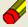

El sistema proporciona el soporte necesario para que pueda manejar un registro por cada grupo a su cargo, dentro del registro de cada grupo se manejan los datos particulares del grupo como son grado, grupo, materia impartida, periodo de vigencia, y la lista de alumnos. Opcionalmente puede crear un calendario de sesiones para un grupo con lo cual podrá llevar el registro de asistencias de los alumnos, también puede programar los rubros de evaluación tales como tareas, proyectos, trabajos, investigaciones, exámenes, etc.
Crear un nuevo registro de grupo
Para crear el registro de un nuevo grupo:
- Haga click en el menú Alumnos
- Haga click en el submenú Grupos
- Haga click en el submenú Nuevo grupo
- En la ventana Crear grupo nuevo capture los datos personales del
grupo
(la materia debe seleccionarla de la lista desplegable y las opciones son las materias proporcionadas en la ventana Datos del docente) - Haga click en el botón Guardar

- El valor de la clave de grupo se generara automáticamente
(la clave se compone por los datos: grado grupo+clave de materia+inicio de vigencia-fin de vigencia) - Opcionalmente, una vez creado el registro puede utilizar los botnes de la barra superior
 Abre el registro del grupo (Ahí puede manejar la lista de alumnos)
Abre el registro del grupo (Ahí puede manejar la lista de alumnos)- Abre el calendario de sesiones del grupo
- Abre la ventana de programación de rubros de evaluación
- Si desea crear un nuevo registro haga click en el botón Limpiar campos 
Manejar el registro de grupo
La ventana ficha de grupo proporciona soporte para manejar los datos de un grupo, puede ver o modificar los datos particulares de un grupo (grado, grupo, materia, aula), así como la lista de alumnos, asistencias y las calificaciones para los rubros de evaluación programados.
Para manejar el registro de un grupo:
- Haga click en el menú Alumnos
- Haga click en el submenú Grupos
- Haga click en el submenú Ficha de grupo
(también puede oprimir la combinación de teclas Ctrl+G para abrir la ventana Ficha de grupo) - En la ventana Ficha de grupo ingrese la clave del grupo en el campo Buscar Clave
- Haga click en el botón Cargar
- Si la clave es correcta y existe el registro se cargaran los datos del grupo
- La ventana se divide en dos áreas en la parte superior encontrara los datos del grupo mientras que en la parte inferior podrá manejar la lista de alumnos (para toma de asistencias o calificar rubros)
- Si desea corregir o modificar algún dato (excepto la clave y la lista de alumnos) puede hacerlo
escribiendo el nuevo valor en el lugar correspondiente, para guardar los cambios haga clik en el botón
Guardar
- Si desea crear o modificar el calendario de sesiones del grupo haga clik en el botón Calendario de sesiones
- Si desea crear o modificar la lista de rubros de evaluación del grupo haga clik en el botón Programación de rubros de evaluación
- Si desea puede imprimir un reporte haga clik en el botón Imprimir un reporte Aparecerá una lista con tres opciones: Lista de alumnos, Calificaciones de un rubro o Porcentaje de asistencia. Si elije Calificaciones de un rubro aparecerá una lista con los rubros existentes, elija el rubro del cual quiere imprimir un reporte.
- Si desea eliminar el grupo haga clik en el botón Eliminar grupo
actual

(debe considerar que se eliminaran los datos completamente, incluyendo el calendario, así como las asistencias y los rubros de evaluación del grupo)
Sobre la lista de alumnos del grupo:
- Para agregar un alumno al grupo primero deberá haber creado el registro de alumno
Guía para hacerlo - Puede agregar alumnos haciendo click en el botón Agregar se le pedirá la matricula del alumno a agregar
- Puede quitar alumnos del grupo haciendo click en el botón Quitar se le pedirá la
matricula del alumno a quitar
(esta acción no afectara el registro personal del alumno ni su pertenencia a otros grupos o su registro de tesis) - Si hace click con el botón derecho del mouse en la matricula de un alumno aparecerá un menú con opciones para ver los registro de desempeño, asesorías o personal del alumno correspondiente
- Para tomar asistencia de alumnos, debe seleccionar Lista de asistencias. Por cada alumno haga click con el botón derecho del mouse en la columna de la sesión de la cual quiere registrar la asistencia, aparecerá un menú elija la opción correspondiente. Una vez tomada(s) la(s) asistencia(s) de los alumno(s) haga click en el botón Guardar asistencia para que las asistencias se guarden permanentemente
- Para calificar alumnos, debe seleccionar Lista de calificaciones. Por cada alumno haga click con botón derecho del mouse en la columna del rubro del cual quiere calificar, aparecerá un menú elija la opción correspondiente. Una vez tomada(s) la(s) calificación(es) de los alumno(s) haga click en el botón Guardar Calificaciones para que las calificaciones se guarden permanentemente
Calendarizar sesiones de un grupo
Para calendarizar las sesiones de un grupo:
- Haga click en el menú Alumnos
- Haga click en el submenú Grupos
- Haga click en el submenú Calendario de grupo
(también puede oprimir la combinación de teclas Ctrl+M para abrir la ventana Calendario de grupo) - En la ventana Calendario de grupo ingrese la clave del grupo en el campo Buscar Clave
- Haga click en el botón Cargar
- Si la clave es correcta y existe el grupo se cargara el calendario con las sesiones programadas del grupo
- Si desea ver la ficha del grupo haga clik en el botón
Ficha de grupo
- Si desea ver los rubros de evaluación programados para el grupo haga clik en el botón Programación de rubros de evaluación
- Puede imprimir un reporte con la lista sesiones programadas haga clik en el botón Imprimir reporte
Sobre la lista de sesiones programas del grupo:
- Cada sesión programada tiene su propio registro
- Puede agregar sesiones haciendo click en el botón Agregar
(también puede definir en el área horario semanal los días y horas de las semana en que
tiene sesión y generar automáticamente las sesiones desde ahí correspondientes al periodo de vigencia) - Puede modificar datos de sesiones existentes haciendo click en el botón Modificar
- Puede quitar sesiones existentes haciendo click en el botón Quitar
(si quita una sesión se borraran las asistencias que pudieran haber sido registradas para la fecha correspondiente) - En el área Avance en objetivos puede ver la lista de objetivos del curso
(los temas registrados para ver en las sesiones cuentan como un objetivo)
Al seleccionar un objetivo puede registrar avances obtenidos - En el área Horario semanal puede ver los horarios y días de sesión con el grupo
Programar rubros de evaluación de un grupo
Para programar los rubros de evaluación de un grupo:
- Haga click en el menú Alumnos
- Haga click en el submenú Grupos
- Haga click en el submenú Rubros de evaluación
- En la ventana Rubros de evaluación ingrese la clave del grupo en el campo Buscar Clave
- Haga click en el botón Cargar
- Si la clave es correcta y existe el grupo se cargara la lista de rubros de evaluación programados para el grupo
- Si desea ver la ficha del grupo haga clik en el botón
Ficha de grupo
- Si desea ver las sesiones programadas para el grupo haga clik en el botón Calendario de sesiones
Sobre la lista de rubros de evaluación
- Cada rubro de evaluación tiene su propio registro
- Puede agregar rubros haciendo click en el botón Agregar
- Puede modificar datos de rubros existentes haciendo click en el botón Modificar
- Puede quitar rubros existentes haciendo click en el botón Quitar
(si quita un rubro se borraran las calificaciones que pudieran haber sido registradas)
Reportes de grupo
Puede crear reportes gráficos de estadísticas de un grupo. El sistema puede generar cuatro tipos de reportes en base a los datos acumulados del avance de actividades del grupo.
Para generar los reportes
- Haga click en el menú Reportes
- Haga click en el submenú Por grupo
- En la ventana Reportes de grupo indique la clave del grupo haga click en Cargar.
- Si hay datos suficientes se generaran los siguientes cuatro reportes
- Porcentaje visto por tema en el curso
Muestra el porcentaje visto por cada tema que abarca el curso
los temas abarcados son aquellos registrados en datos del docente en la materia respectiva del grupo - Gasto de tiempo por tema en el curso
Muestra el gasto en minutos por cada tema que abarca el curso - Calificación por rubro para grupo
Muestra la calificación obtenida por el grupo (promedio de todos los alumnos)
por cada rubro de evaluación planeado. - Porcentaje de avance en objetivos planeados
Muestra el porcentaje de avance por cada objetivo planeado para el curso
Buscar grupo(s)
Para buscar uno o más grupos:
- Haga click en el menú Alumnos
- Haga click en el submenú Grupos
- Haga click en el submenú Buscar
(también puede oprimir la combinación de teclas Ctrl+U para abrir la ventana de búsqueda) - Parámetros para buscar
- Ingrese el valor de al menos un campo de búsqueda
- Si va a usar dos o más campos de búsqueda seleccione si desea que la búsqueda muestre
resultados que cumplan al menos un criterio o todos los criterios
(por ejemplo si busca grado=5 grupo=A y selecciona la opción al menos un criterio se buscaran los grupos grado 5 (sin importar el grupo) o grupos A (sin importar el grado); con la otra opción se buscaran los grupos 5A)
- Haga click en el botón Buscar
- Si se encuentra un solo grupo se abrirá directamente su Ficha de grupo
- Si se encuentran dos o más grupos se abrirá la ventana de Resultado de búsquedas en la cual haciendo click con el botón derecho del mouse dispondrá de las opciones para ver la ficha, el calendario o la ventana de rubros de evaluación programados para el grupo